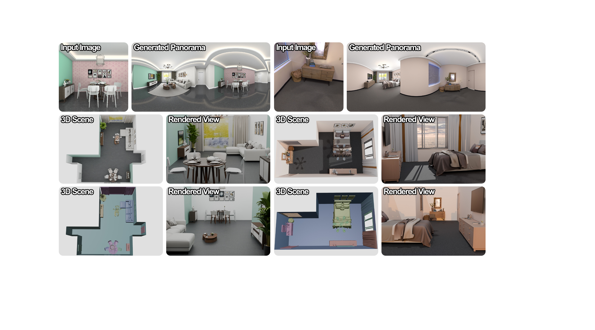

01
Panorama
Generate a spatially plausible 360° blueprint from a single perspective image.
VVAResearch project · 2026
DistScene turns a single perspective image into a coherent, explorable 3D scene through a panoramic-to-object composition pipeline.

The idea
Instead of asking a 3D model to invent every part of a room at once, DistScene first creates a globally consistent 360° panorama. That blueprint captures layout, object distribution, and visual style before the scene is decomposed into clean, reusable assets.
The result is a scene that stays holistic from every viewpoint while keeping the diversity of generative assets.
The pipeline
A global-to-local workflow
for compositional scenes.
Generate a spatially plausible 360° blueprint from a single perspective image.
VVAParse the panorama into room geometry, point clouds, and object-level boxes.
scene parsingRefine distorted object views, then lift them into high-fidelity 3D assets.
VRMPlace every asset into a coherent scene with box-constrained adjustment.
BCAWhy it works
DistScene uses the panorama as a shared coordinate system. Room-level coherence comes first; object-level generation stays flexible. This separation makes it possible to explore new scene content without losing the structure of the original view.
Reference
@inproceedings{distscene2026,
title = {DistScene: Holistic 3D Scene Generation via Panoramic-to-Object Composition},
author = {Anonymous Authors},
booktitle = {European Conference on Computer Vision},
year = {2026}
}The citation block is a working placeholder while the paper metadata is finalized.